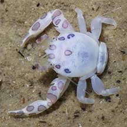
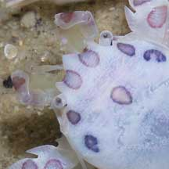
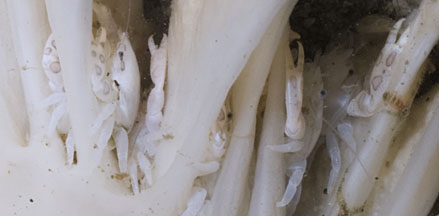
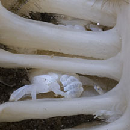
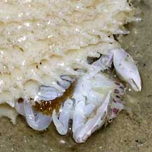
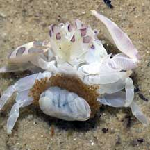
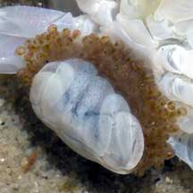
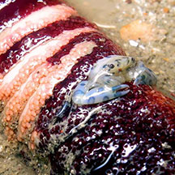

|
|
| porcelain crabs text index | photo index |
| Phylum Arthropoda > Subphylum Crustacea > Class Malacostraca > Order Decapoda > Anomurans > Family Porcellanidae |
| Painted
porcelain crab Porcellanella triloba Family Porcellanidae updated Dec 2019 Where seen? This polka-dotted porcelain crab is often seen in pairs in sea pens that are commonly seen on our Northern shores. It was previously known as Porcellanella picta. Features: Body width 1cm or less. Body oval and smooth, with pink dots circled in black or blue, especially on the pincers and upper body. The pincers are not much bigger and may be smaller than the body. Sea pen friend: It is found on Spiky sea pens (Pteroides sp.). often a pair but sometimes many more. One was also seen in a Sea pencil. Status and threats: This porcelain crab is listed as 'Vulnerable' on the Red List of threatened animals of Singapore. |
|
 Changi, Jul 05 |
 Mouthparts Changi, Jul 05 |
|
 Sometimes, many may be seen in one sea pen. Changi, Oct 11 |
 |
|
|
 Changi, Jul 05 |
 Mama crab with eggs. Changi, Jul 05 |
 Changi, Jul 05 |
| Painted porcelain crabs on Singapore shores |
On wildsingapore
flickr
|
| Other sightings on Singapore shores |
 Beting Bronok, Jun 18 Photo shared by Jianlin Liu on facebook. |
|
Links
References
|